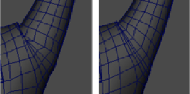

- 在“动画”(Animation)、“建模”(Modeling)和“绑定”(Rigging)菜单集中：“变形 > (创建) Delta Mush”(Deform > (Create) Delta Mush) >

“基本”(Basic)选项卡
- 平滑迭代次数(Smoothing iterations)
-
用于设置平滑算法的运行次数。如果为“平滑迭代次数”(Smoothing Iterations)设置较大的数字，顶点接收到的平滑数量也会增加，从而提供更好的结果。但是，平滑算法运行的次数越多，处理效果所需的时间就越长。默认迭代次数值为 10。
- 平滑步长(Smoothing step)
- 指定每次平滑迭代使用的平滑步长。与较低的值相比，较高的值可能会导致不稳定，但是收敛更快。
- 固定边界顶点(Pin border vertices)
- 启用时，在平滑期间将网格的边界顶点固定到其当前位置。
- 向内约束(Inward Constraint)/向外约束(Outward Constraint)
- 使用“向内约束”(Inward Constraint)和“向外约束”(Outward Constraints)可保持 Delta Mush 变形器之前的变形网格形状轮廓。这在使用设置为低值的置换时非常有用（基本上只使用 Delta Mush 的“Mush”部分），但是在其他情况下它也可以提供良好的结果。
- 使用默认值 0.0 时，这些约束没有效果。当增加这些值时，它们试图仅相切于网格移动顶点，以便保持轮廓。
提示： 0.0 以外的值会影响计算时间，因此仅在需要结果时使用它。
- 距离权重(Distance Weight)
- 通过“距离权重”(Weight)属性，您可以在计算“Mush”时考虑顶点之间的距离。默认情况下，它设置为 0.0。
- 如果将值设置为 1.0，则会在计算 Delta Mush 的 Mush 部分时将所连接顶点之间的距离考虑在内。这样，彼此靠近的顶点比相距更远的顶点具有更大的影响。

距离权重(Distance weight)：关闭(Off)和打开(On)
- 如果网格所含面的边具有非常类似的长度，则此设置的效果最小，但是如果多边形条带具有小面和大面的组合，则 distanceWeight 属性会提供更好的结果。它对计算时间没有大影响。
“高级”(Advanced)选项卡
在“高级”(Advanced)变形器选项中也讨论了此信息。
- 变形顺序(Deformation order)
- 指定按可变形对象的变形顺序放置变形器。放置会影响变形器的效果和性能。
默认(Default) 通常，Maya 在紧挨着变形形状之前的位置放置变形器（作为输入）。
除非变形器将要对没有历史的形状节点执行操作，否则此选项与“之前”(Before)效果相同。在这种情况下，顺序将与“之后”(After)相同。
使用“默认”(Default)选项为对象创建大量变形器时，变形链的顺序将与创建变形器的顺序相同。
之前(Before) Maya 在紧挨着可变形对象的变形形状之前的位置放置变形器。在对象的历史中，变形器将在变形形状之前即刻放置。“默认”(Default)通常提供这种放置类型。
之后(After) Maya 在可变形对象之后即刻放置变形器。您可以使用“之后”(After)在对象历史当中的某处创建中间变形形状。使用“之后”(After)，对象的原始形状不会隐藏。
分割(Split) Maya 将变形分割为两个变形链。可以使用“分割”(Split)同时以两种方式使对象变形，从而创建源自同一原始形状的两个最终形状。
平行(Parallel) 在对象历史中，Maya 将变形器与现有输入节点平行放置，然后融合现有输入节点和变形器所提供的效果。在最终形状之前放置融合现有输入节点和新变形器效果的平行融合器节点（默认名称：parallelBlendern）。
- 排除(Exclusive)
-
指定变形器集是否位于某个划分中。划分中的集不能有重叠的成员。如果启用，“要使用的划分”(Partition To Use)和“划分名称”(Partition Name)选项将变为可用。默认设置为禁用。
- 要使用的划分(Partition to use)
-
列出所有现有划分和默认选择“新建划分”(New Partition)。如果选择“新建划分”(New Partition)，则可以编辑“划分名称”(Partition Name)字段，以指定新划分的名称。（在“排除”(Exclusive)处于启用状态时可用。）
- 划分名称(Partition Name)
-
指定将包括变形器集的新划分的名称。建议的划分名称为 deformPartition，如果尚不存在，则将创建该名称。通常，可能会将所有排除式变形器集置于名为 deformPartition 的划分中。但是，可以根据需要创建多个划分并为这些划分命名。仅当“排除”(Exclusive)处于启用状态时才可用。